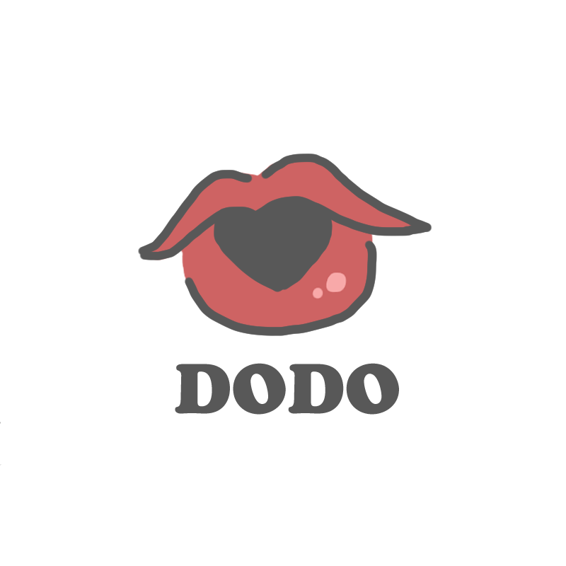

口紅，是彩妝用品中不可或缺的一部分。
許多人平常就算不化底妝，也會使用口紅來增加氣色。
現今的人們愈來愈注重重要日子的儀式感，但我們認為就算是平常的平凡日子也非常重要。
生活的幸福感，會因為某一天、某一時刻的各種零碎的事而有所不同，
大到各種節日的驚喜，小到日常的小確幸。
不管是男生還是女生都可以藉由不同顏色口紅的點綴來提升自己的容貌與自信，
也可以給別人創造良好的第一印象，找到屬於自己的美。